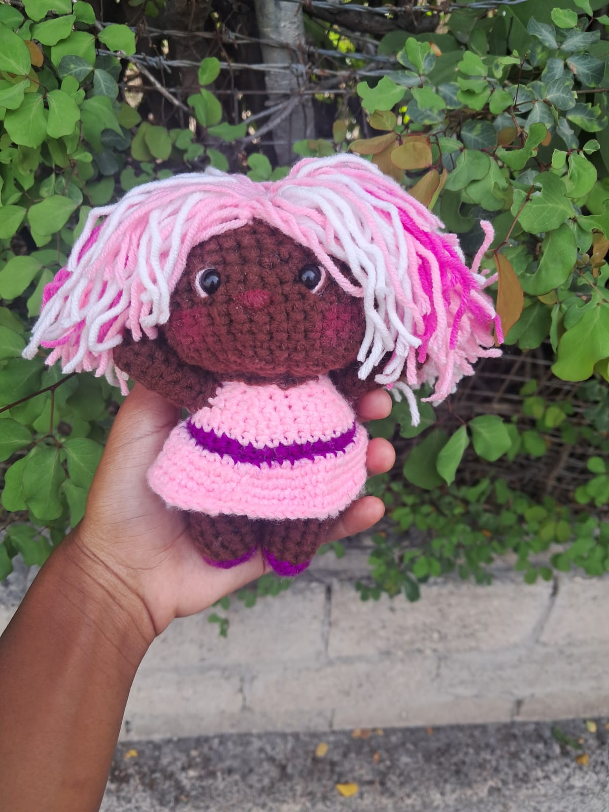
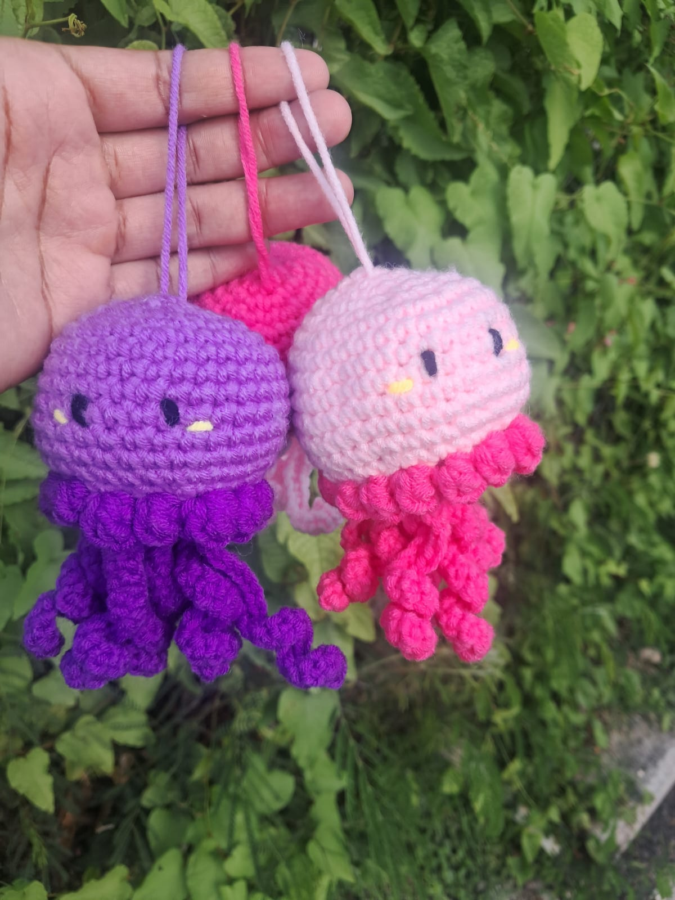

My Web Development Journey
Sunday, 4th October, 2026 by Denique Whyte

I greatly appreciate learning new and interesting aspects of Web Development. It has strengthened my knowledge on the structure of websites using headings, paragraphs, images and other elements.
I look forward to learning more technical aspects of Web Development such as HTML, CSS and Java and how they work interchangeably in creating websites.
What Inspires Me To Crochet
Sunday, 4th October, 2026 by Denique Whyte

My inspiration comes from creating small gifts for friends and family. I started crocheting in 2025 with great aspiration to create my own clothes. My experiences with crocheting have taught me tenacity, patience and endurance when it comes to creating my own crochet pieces.
As I continue my journey in learning how to crochet and develop my skills, I hope to use my experiences as motivation to become better at crocheting and ultimately creating my own crochet business. I believe that staying motivated, learning from others and continuing to work towards my goals can help me create amazing crochet pieces in the future.